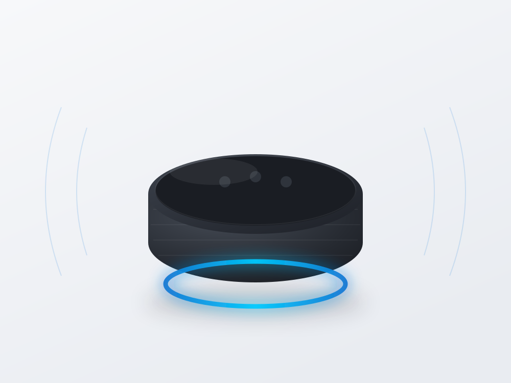
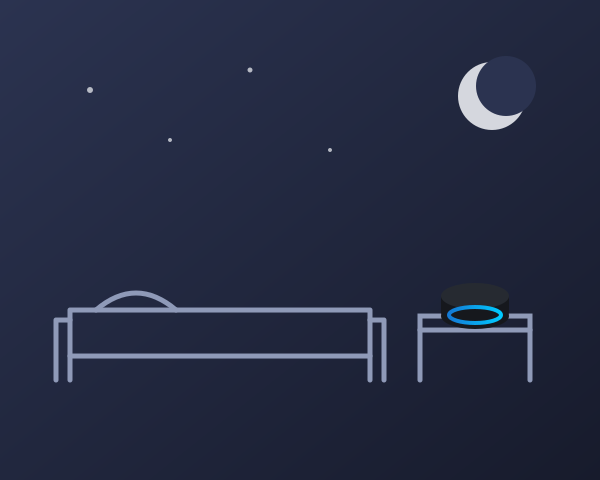
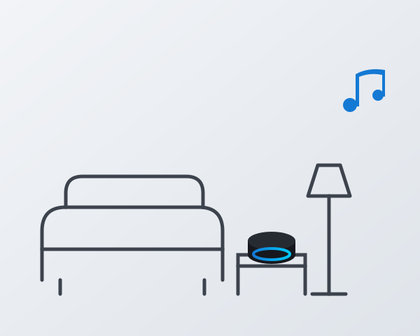
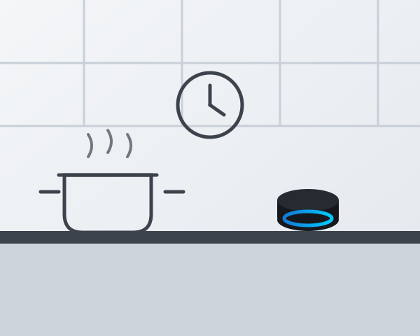
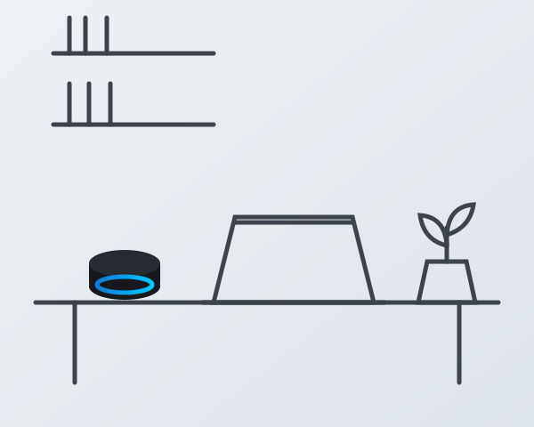
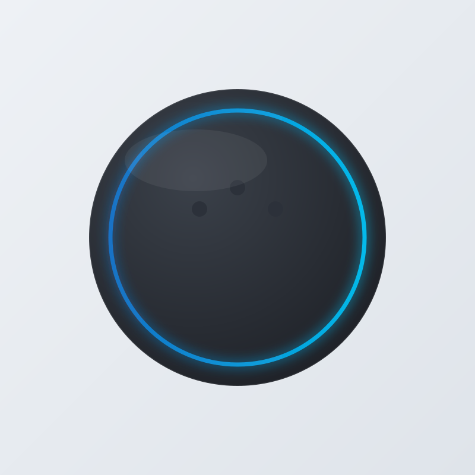

♪
Sonido mejorado
Sonido potente y equilibrado con graves más profundos que su generación anterior.
El altavoz inteligente más popular de Amazon, con mejor sonido, control por voz y automatización del hogar. Controla tu casa, tu música y tu día a día con una sola frase.

Gestionar tareas diarias, escuchar música, controlar luces u obtener información no debería exigirte el móvil y tres mandos distintos.
Sonido potente y equilibrado con graves más profundos que su generación anterior.
Reproduce música y controla luces, enchufes y dispositivos compatibles sin tocar nada.
Automatiza acciones diarias: “Buenos días” enciende la luz y te da el tiempo.
Tiempo, noticias, temporizadores y recordatorios en el momento en que lo pides.
Formato reducido y elegante que encaja en cualquier habitación de la casa.
Compatible con miles de dispositivos Alexa: cámaras, enchufes, termostatos y más.
Consulta el precio actual y la disponibilidad en Amazon.

Despertar suave con rutinas, temporizadores de sueño, luz de noche y recordatorios sin coger el móvil.

Controla luces, TV y altavoces compatibles, y pide tu música sin levantarte del sofá.

Manos ocupadas: pon podcasts, cuenta temporizadores simultáneos y consulta recetas por voz.

Bloques de concentración con temporizadores, resúmenes de noticias y música de concentración.
Altavoz inteligente compacto con Alexa integrada: reproduce música, controla el hogar inteligente, crea rutinas, consulta información por la voz y gestiona tareas cotidianas, con un diseño elegante pensado para cualquier estancia.

No. Alexa y las funciones básicas (música de fuentes gratuitas, rutinas, temporizadores, control del hogar) funcionan sin pagar nada. Algunos servicios o catálogos musicales pueden requerir suscripción propia del proveedor.
Se configura con la app Alexa (Android e iOS) y es compatible con miles de dispositivos de hogar inteligente con etiqueta “Compatible con Alexa”. Comprueba la compatibilidad del fabricante antes de comprar.
Puedes activar el botón físico de silencio del micrófono, borrar grabaciones desde la app y revisar tus ajustes de privacidad en tu cuenta Amazon. Revisa la política de Amazon para el detalle completo.
La 5ª generación mejora los graves y el volumen frente a la anterior. Para salones muy grandes o escucha exigente, modelos superiores de la gama Echo ofrecen más potencia.
Precio de hoy en Amazon: 89,99 € (puede variar). Consulta el precio y las promociones vigentes en el botón “Comprar ahora”.
[CONTENIDO_CAJA_CONFIRMADO_POR_FICHA_DE_PRODUCTO]
Comprueba el precio de hoy en Amazon y lleva el Echo Dot a casa.
89,99 € Comprar ahoraComo afiliado de Amazon, puedo recibir una comisión por las compras adscritas, sin coste adicional para ti. Precio y disponibilidad sujetos a cambio.